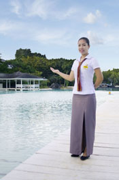
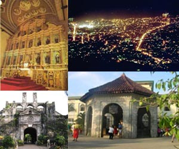

CONTACT US
VERY IMPORTANT NOTICE
Help us avoid spam so that we can attend to your inquiry more promptly. Whenever you write to any of the email addresses given below, please type the specified word or phrase as the Subject of your email. (You may add more words if you like.) This will enable us to quickly identify your email as a legitimate one. Should you forget to put the correct subject, your email will not come through, although you will have a chance to re-send.
For general inquiries and reservations:
E-mail: inquiry@plantationbay.com
Subject: Room inquiry
For amendments to your reservation:
E-mail: rsvns@plantationbay.com
Subject: Reservation Amendments
For travel agency, banquet, conference and group package inquiries (Cebu office):
E-mail: sales@plantationbay.com
Subject: Group inquiry
For travel agency, banquet, conference and group package inquiries (Manila office):
E-mail: manilasales@plantationbay.com
Subject: Group inquiry
For food and beverage inquiries:
E-mail: fb@plantationbay.com
Subject: F & B inquiry
For employment opportunities:
E-mail: hrd@plantationbay.com
Subject: Employment inquiry
To contact a guest currently staying at the resort
E-mail: guest@plantationbay.com
Subject: Please deliver to guest [followed by the guest name]
Our Mailing Addresses:
Plantation Bay Resort and Spa
Marigondon, Mactan Island
Cebu, Philippines 6015
Tel. + 63 32 505 9800
Fax + 63 32 505 9818
Manila Office
Unit No. 318 McKinley Park Residences
31st St., corner 3rd Avenue, Bonifacio Global City
Taguig, Metro Manila, Philippines 1634
Tel. + 63 2 844 5024 to 25
Fax + 63 2 844 5030
GUEST COMMENTS
EXCEPTIONAL GUEST SATISFACTION

When was the last time you filled out a guest comment form at a hotel? When was the last time you felt moved to leave a complimentary note about your stay?
We get almost 100,000 visitors a year, and they are virtually unanimous in calling Plantation Bay one of the best hotels they have ever stayed in. Few hotels, at any price, enjoy this kind of guest satisfaction. And our guest roster includes families, couples, business-persons, retirees, singles, divers - ALL kinds of travelers co-exist happily at Plantation Bay.
And remember, tipping is prohibited throughout the resort. We give all our guests the highest standard of service, without their ever having to worry about when, whom, or how much to tip.
Social Media Sites and TripAdvisor.In the age of the Internet, anyone can post a review about a hotel, whether he has actually been there or not. Because it has long been widely known that Plantation Bay's Guest Satisfaction and Word-of-Mouth are the best in the country, certain other hotels, desperate for business, have hired PR firms to sponsor positive reviews about themselves, and negative reviews about us.
Most of these sponsored reviews are on user-generated sites, and the most well-known of these is TripAdvisor, which accepts reviews from anyone with an e-mail. It makes no effort to verify if the reviews are by real paying guests, or if they are honest and fair. In addition, TripAdvisor has spawned a new class of hotel guest, bent on bullying hotels with the spoken or unspoken threat of posting an ugly review. Some of them are motivated by the hope of getting a freebie or an upgrade, others just want to feel important, and others have anger management issues. A small number of cranks and crazies on this site even post again and again, turning a single weekend stay into a dozen negative reviews. (If you don't understand why anyone would do this, it's all right; that shows you probably aren't a crank.)
Though Plantation Bay receives many excellent comments on TripAdvisor, and indeed was given its Award of Excellence 2013, you should understand that TripAdvisor reviews can be misleading, and that many of the negative reviews on TripAdvisor are bogus (planted by competitors) or written by people with extreme points of view that the typical traveler would not agree with. The following links discuss some of the pitfalls of naively trusting social media, believing the words of people you never met and who may not even exist, to make a decision involving thousands of dollars.
On Tripadvisor, many hotels in Mactan have one glowing review after another, often peppered with "facts" and staff names, even reviewer pictures, to convince readers they are genuine. But in our opinion, many of the reviews on TripAdvisor are bogus, and no more helpful than asking a random person on the street how to spend $1000. Judge for yourself. There is a marked difference between the reviews on TripAdvisor.com and those on booking sites such as Expedia.com, which accept reviews only from verified paying guests.
GUEST COMMENTS SUMMARY
| Please Rate | Very Good | Acceptable | Deficient | Pretty Bad |
|---|---|---|---|---|
| Ambience, Look, and "Feel" of the Hotel | 1344 | 86 | 4 | 1 |
| Reservations, check- in, check-out | 1208 | 200 | 17 | 10 |
| Quality of Room and Hotel Facilities | 1212 | 201 | 17 | 5 |
| Quality of Food and Dining Areas | 1029 | 357 | 41 | 8 |
| Quality of Service Throughout the Hotel | 1316 | 104 | 10 | 5 |
| Overall Level of Satisfaction | 1292 | 127 | 13 | 3 |
| Please Rate | Very Good | Acceptable | Deficient | Pretty Bad |
|---|---|---|---|---|
| Ambience, Look, and "Feel" of the Hotel | 485 | 35 | 2 | 0 |
| Reservations, check- in, check-out | 423 | 81 | 13 | 5 |
| Quality of Room and Hotel Facilities | 427 | 86 | 9 | 0 |
| Quality of Food and Dining Areas | 363 | 143 | 11 | 5 |
| Quality of Service Throughout the Hotel | 465 | 49 | 8 | 0 |
| Overall Level of Satisfaction | 460 | 54 | 6 | 2 |
FAMILY GUEST COMMENTS
Our thanks to the management and all the staff. Smiles were all in their faces. We really had an excellent experience in this place. The food in Kilimanjaro, Fiji, Savannah, and Palermo were so good. The scenery and the design were truly magnificent and it’s a kid-friendly place. Staying in the pool and in the lagoon de-stresses one’s mind and body.
J.M., family from Quezon City, stayed June 2015
I was amazed by the service asking guests ahead via phone if we want to avail the free coaster to the airport/SM. We enjoyed the pools, the firing range, the kids amenities, game room, the free bicycle ride. I also love the welcome/ complimentary basket. The employees are very courteous and always smiling! Very Good.
R.L., family from LLC, Cebu, stayed June 2015
I would like to thank all the staff for making our stay very memorable to us. Compared from last year’s, this year, we got to do more activities – banana boat, island hopping, snorkeling, kayaking, city tour, and Firing Range. From the hotel to the food and the staff, the quality is very good. You guys are the best! We will again visit next summer.
S.Y., returning guests from the US, stayed June 2015
We have nothing but praises for Plantation Bay. From the ambience, to the food, to the customer service… simply amazing! J Keep up the excellent way you run the resort. My family and I will definitely come back with more members from our extended family so that they too can share the experience.
J.O., family from Makati, stayed May 2015
Housekeepers are doing an excellent job. Rose who checked us in is excellent. Our dining experience is very satisfying. Excellent presentation of food. Kilimanjaro and Savannah Grill staff are also excellent. Loved the homey layout of the resort. Lagoons are clean and safe.
M.K., family from the US, stayed May 2015
Plantation Bay is one of the best resorts in the country. It would be difficult to find one better than this. Thank you for the sweet birthday thought. My daughter loves her birthday cake!
S.U., family from Manila, stayed May 2015
We’re here to celebrate the wedding anniversary of our parents and we are very satisfied with our choice! Good food, courteous staff, and the best facilities! We enjoyed everything about our stay.
G.A., family from Iloilo, stayed May 2015
A trip to this resort is highly recommended! We had the most amazing experience. The place is exquisitely beautiful and truly unforgettable, and so are its wonderful staff who delivered quality service. They are so friendly, accommodating, and attentive to all guests. Each and every staff is always smiling and greets us everywhere and every time we meet them, which made us feel very welcome. It feels good to be a part of your Plantation Bay Family. God bless you all!
C.D., balikbayan family from Australia, stayed May 2015
This is our favorite place for vacation! We love the facilities and the service. All employees are polite and accommodating. We are always satisfied with our stay.
V.B., family from Antipolo, returning guests since 2005, stayed April 2015
Everything is very good. Thank you for the wonderful experience. My family very much enjoyed the facilities. You have the most pleasant and accommodating staff!
N.J., family from Saudi Arabia living in Switzerland, stayed April 2015
We all enjoyed our stay. Lots of activities to look forward to. Good food. We appreciate the scheduling of Sunday mass in the resort. Good management, facilities, and staff.
A.S., family from Manila who booked 3 rooms, stayed April 2015
This was my first tropical vacation and I loved everything – from the staff to the facilities. Everyone was friendly, courteous, polite, and pampering. Always a smile and a “Good morning, afternoon, etc.” Paradise! Didn’t feel taken advantage of. Nice inclusions.
R.M., family from the US, stayed March 2015
The service and hospitality of the staff is highly commendable. As beautiful and relaxing your resort is, it is only exceeded by your tremendously courteous, efficient, friendly, and helpful staff. Commendation to Lionel and Noel who made our Whale Shark experience a great one! Also to Vic of Bell Service. Thanks to all, we had a wonderful stay. Everything was up to expectations!
B.B., family from Manila, stayed March 2015
I’ve been to several hotels and resorts in Canada, Dominican Republic, Jamaica, Cuba, and the US. This by far is the best. Awesome staff. Food is world-class. Best decision to spend our vacation here. I will highly recommend when I come back to Toronto.
H.M., couple from Canada, stayed February 2015
We have been staying here for the past 10 years. We have consistent satisfactory service from the staff towards its guests. The ambience never fails to offer the heavenly feel; just keeps wanting to some back. J
J.J., returning guests from Poland, stayed February 2015
We love that you don’t have to go out of the resort. Everything is here for relaxation. What’s so impressive here is it’s strictly No-Tipping. Staff are all nice and courteous.
E.G., family from the US, stayed February 2015
I love this place! This is my fifth visit and you only get better each time. My family has created lots of good memories here. The staff are all awesome and accommodating.
K.C., family from Manila, stayed January 2015
We most enjoyed the very nice environment and the family-friendly atmosphere. Excellent staff. We would like to mention the excellent service we got from Bobby, Marvie, and Anthony at the pool bar. Spa is great too. Excellent service from Conchie, Keila, Mary, Meta, and Chris. They are all great!
T.M., balikbayan family from the US, stayed January 2015
We enjoyed almost all of your facilities. Happy that we were upgraded to a Family Room with PlayStation. It amazed me that the room comes with complimentary canned juices, candies, etc.
T.D., family from Bulacan, stayed January 2015
All the staff are courteous and very accommodating. The best holiday we ever had! Love the room, swimming pools, food, and the courteous employees. Hope to be back very soon.
J.A., balikbayan family from Ireland, stayed January 2015
Thank you for redefining our definition of rest and recreation! J We enjoyed everything about the resort – the staff, the food, and the place.
R.P., family from South Cotabato, stayed January 2015
We enjoyed the nightly shows, the delectable food, and the customer service. We really wish we could stay longer. Customer service is one other hotels should mirror! Thanks.
C.F., family from the US, stayed November 2014
We had a wonderful stay. The spa is world-class. We loved that there is so much to do. You’ll never feel bored. We loved the dinner at Palermo as they arranged lunch menu for us during dinner time. For my parent’s anniversary, they also offered a cake. Special thanks to Rex.
N.A., family from India living in Hong Kong, stayed November 2014
We appreciated the service of the crew from front desk, to bellman, to butler service especially of IRISH who has been very helpful in planning a surprise cake and flowers for my cousin. Greatly appreciate your idea of bringing balloons and scattering red roses which makes the surprise even more exciting. Truly you’re a great asset of the resort, couldn’t thank you enough. Will definitely come back!
C.F., balikbayan family from the US, stayed November 2014
Plantation Bay has the most pleasant and accommodating personnel. Keep up the good service and your improvements in the resort!
D.G., family from Manila, stayed November 2014
First time visiting Cebu. Here for family vacation. Appreciated the cleanliness of the entire resort, the accommodating staff, and the activities.
C.O., balikbayan family from the US, stayed October 2014
Everything was wonderful! Loved the no tipping policy, the friendliness of most staff, the facilities, the food, the lagoon, and the spa. And the driver who picked us up at the airport was excellent as was Ferdy who drove us Wednesday night.
A.H. and G.H., loyalty guests from the US, stayed October 2014
We most enjoyed the pools in terms of quantity, options (fresh or saltwater), and child-safe depth. Loved the resort’s ambience and feel. Also its facilities, available activities, and the option to charge all to your room. No need to bring cash while swimming. Appreciated the no-tipping policy. And the staff are very courteous, friendly, and trustworthy.
M.B., family from Manila, stayed October 2014
Front Office Department was accommodating and friendly. Over-all, excellent service. First meal at Fiji was superb. Chel was superb and knows her product well. Food was the best. Savannah staff was amazing on our last night. Our entire stay was memorable.
L.E., family from Cebu, stayed September 2014
We most enjoyed the themed dinner show. The dancers are excellent. Very impressive that they did not stop smiling even when it was raining.
H.L., family from Korea, stayed September 2014
One of the best places I’ve ever stayed at in the world. This venue is beautiful and the pools are wonderful. The welcome we received was phenomenal. Amazing service! There wasn’t anything the staff wouldn’t accommodate. Always friendly and helpful. They went out of their way to find an extra room on a fully booked day. We’ll definitely return and stay longer.
C.P., balikbayan family from the US, stayed August 2014
Although we stayed for just one day, I must say that the service really and truly exceeded my expectations. Staff are very efficient and friendly. Very attentive and punctual. Simply the best. Special thanks to Hannah.
R.R., family from Manila, stayed August 2014
Sprawling property. Delicious food. Very kind staff. I am amazed with the No Tipping policy. We most enjoyed the Halo-Halo making and the kalesa (horse-drawn carriage) ride. Thank you very much!
M.A., family from Japan, stayed August 2014
I would like to commend two of your staff that really put into their hearts the true meaning of customer service. First is Jem at the check-in counter. She made the check-in very fast and efficient. Her vibrant approach made us feel relaxed and welcomed. Second is Shad at the Kilimanjaro breakfast buffet. She definitely shows the true meaning of your resort’s motto “Not just a resort, but an experience. Her mindset is not about making profit but making the best experience for us. I will surely be back at Plantation Bay and will certainly recommend it to family and friends.
L.M., family from Cebu, stayed July 2014
We loved everything – the food, the service of the staff who follow your No-Tipping policy, my room, which is really clean. I feel relaxed all throughout our vacation. Your excellent service is highly appreciated. We will be back next year for our family reunion and I will recommend this place to my co-workers in the US. Thank you guys for making our stay the best ever!
S.Y., balikbayan family from the US, stayed July 2014
This is the third time we have stayed here and brought guests. Each time there has been more improvements and it has been more impressive. Customer service continues to be excellent. The music at the gazebo near the poolside rooms was terrific!
T.K., family from the US, stayed July 2014
I most enjoyed the pools, which were clean and beautiful-looking. It was very convenient for us to go to the pools since they were close to our room. Breakfast was very good.
V.M., family from Cebu, stayed July 2014
Staff were friendly. We loved the pools, our room, and the food. We enjoyed everything!
G.H., family from Norway, stayed July 2014
We love your hotel! Everyone was amazing to us to make sure we were comfortable. You made it feel like home! There is so much to do, and there is always something new to experience. We also loved your theme nights. We were always greeted with a smile, and everyone was fully adept at helping us. Thank you for everything you have done for us! We hope to see you again soon!
T.B., couple from the UK, stayed April 2014
Food was varied and excellent. Spa services were excellent. Appreciated the music of Arielle and of the pianist at Palermo. Most important asset of the resort is the friendly, helpful, and well-trained staff.
R.D., family from the US, stayed April 2014
Words are not enough to thank you for the wonderful and beautiful experience you have given us. The place itself is heaven for vacationers, your food in all 4 restaurants is superb, your staff's service is very distinct, the activities we can do are numerous that not a day goes by we are not entertained. Lastly, our overall stay was worth every penny— the memories, the laughter and the sunburn were all a FUNtastic experience. We will surely return next year, and recommend you to our family and friends. Keep up the good work!
I.G. via Facebook, April 2014
I love Plantation Bay very much. This is my 8th stay and I keep coming back because the staff are kind and give excellent service.
N.H., returning guests from Japan, stayed April 2014
We had a wonderful experience. We will surely come back and will tell our friends in Canada how awesome the place is and the service we experienced.
Z.T., balikbayan guest from Canada, stayed April 2014
Plantation Bay Resort and Spa is a perfect vacation getaway in the Philippines. We are very lucky to have come here. We enjoyed everything ? the spa, lagoons, restaurants, and water sports. Everything was great! Thank you.
M.R., family from the U.S.A., stayed April 2014
4Life gives the best for the Great Escape qualifiers therefore, they chose Plantation Bay. Big thanks to all staff members for giving us very good service and for being polite, courteous, and always smiling.
E.D., guest from 4Life Research USA, LLC, March 2014
We most enjoyed the fact that the choice between swimming pools, lagoons, and the sea are all within very close distance. We also appreciated the friendliness of the staff and the choice of activities.
R.L., family from France living in Hong Kong, stayed March 2014
"Where every day is an adventure." I have just returned from another wonderful stay in Plantation Bay, Cebu and I have nothing but good words to say! Definitely one of the best resorts I've been to. The place is wonderful, the service is seamless, food is extraordinary and the overall experience is unforgettable. PB is now my favorite "home away from home."
M.M. via Facebook, March 2014
Well-coordinated activities. Staff knowledgeable about the place, every staff member knows where is what. Amazing indeed. Child-friendly. We all loved the ambience, themed dinner, landscaping, Internet connectivity, the mix of fresh and sea water pools… Everything!
C.M., United Nations business support staff, stayed March 2014
Everything about our stay was great! Lots of fun things to do – water slides, tandem bikes and paddle board. This is the best place I have ever seen. Thank you!
K.R., family from Australia, stayed March 2014
We got 2 toddlers and so far, they enjoyed the facilities including the arts and crafts with Nora and the other guys. Staff are all nice and polite and very helpful. Thanks to those who have been very good to us. Keep up the good work!
E.W., family from the U.S., stayed March 2014
My favorite place on Earth! It’s my third time to be here but now I’m married with a young toddler who enjoyed the water and the sand. There are many child-friendly facilities and activities and everyone is very courteous. Will be back next year and will stay for a week!
M.C.F., family from Ormoc City, stayed March 2014
I have just returned home from a fantastic day at Plantation Bay. The Daytripper Package offers fantastic value for money and the set lunch meal was delicious. I would also like to compliment your staff. They are the friendliest, most professional and attentive staff I have seen during my time in the Philippines. When I speak to my expat friends and bowling colleagues, I shall certainly recommend that they pay you a visit.
J.S. in a letter to the GM, March 2014
Our 2-night stay was so much fun in this very relaxing resort that’s ideal for family bonding. Our Two Bedroom Suite in Xanadu was superb. We enjoyed the indoor and outdoor activities and found the staff very friendly, full of respect and ever smiling. I already highly recommended Plantation Bay to my friends. We will be back soon.
P.D., balikbayan family from the US, stayed March 2014
I want to compliment you and your staff. I travel all the time. Literally, I stay at close to 100 different hotels a year. You are fortunate to have well-trained and sincere teammates like Carms, Ardags and Pro. They are EXCEPTIONAL! My experience with them exemplifies why I return over and over to your esteemed resort. Not only are they sincere, respectful, thorough, and patient but most importantly they are amazingly professional. They should be complimented and distinguished.
I also praise you because you are their management. Such greatness does not exist without a strong support structure. It is people like Carms, Ardags, and Pro that build a loyal customer base. In fact, my return stays are directly a result of their efforts.
Thank you.
J.R. in an email to the General Manager, returning guest from the US, stayed February 2014
We want to give special thanks to the staff at Palermo Restaurant. We dined there twice and both times, they really went the extra mile with service, dealing with spilled drink and sorting out food for picky children. The Palermo staff deserve extra-special kudos and thanks.
J.L., family from Canada living in Taiwan, stayed February 2014
It was indeed a fairytale-like night. Everything was so wonderful and way beyond my expectations. My dream date brought to life. I could never thank you guys enough for a wonderful and happy stay. Everything about Plantation Bay is definitely worth going to. ♥ ‘til our next visit! ☺
A.C., couple from Manila, stayed February 2014
Our overall experience was great and positively accepted by the team, including recommendation for future events. Thank you to the management and staff of Plantation Bay!
L.B., GE Philippines - Water and Process Technologies, February 2014
Love the place. Very good service from well-trained staff. Thank you for the beautiful romantic set-up when we had our private dinner last Valentine's Day. My husband and I enjoyed the evening. Until next time.
G.O. via Facebook, February 2014
Staying at Plantation Bay is a remarkable and delightful first class vacation. Beside the exquisite design, we appreciated the service from and the “Mabuhay” atmosphere created by all the professional staff. The resort is a perfect family-friendly destination as relaxing and exciting as your mood dictates. A Disneyworldly-created paradise!
P.M., couple from the U.S., stayed February 2014
We most enjoyed our room’s proximity to the water, the very friendly and accommodating staff, and the availability of several amenities for children and adults. Overall, Plantation Bay is a very family-friendly resort.
L.E., family from Cebu, stayed February 2014
My family had a vacation here 12 years ago and we enjoyed our stay. Now, I came back for a workshop and still enjoyed my stay. Nice food and good facilities. And the staff were courteous and smiling.
J.O., United Nations workshop attendee, stayed February 2014
From the bottom of our heart, we would to thank Ms. Andrea B. Arroyo for assisting and helping us with all of our inquiry and even with our complicated requests. She made things possible even if we communicated only through emails, phone calls and Viber since we are residing out of the country. Our wedding day would not have been that successful and complete without Ms. Andrea Arroyo. Daghang salamat.
C.E. and J.H., couple from Canada, January 2014
We live in Cebu and Canada and travel a lot around the world, especially in Asia. We loved everything about our stay, especially the attentive staff. Thanks to Dawn and Lin at the Reception, and Jeannie, Anna, and Noven in Kilimanjaro. This has been a first-class experience and we will definitely return ASAP!
C.R. and A.R., expatriates from Canada, stayed January 2014
Our stay here was simply overwhelming! We enjoyed the majestic view, the awesome place, and the very strong WiFi connection. And the service is excellent! Staff are very courteous. What more can we ask for?
E.O., family from Cebu, stayed January 2014
Staying at Plantation Bay has always been a pleasure. It's a blend of excellent customer service and picturesque locations over the lagoons. We really love it.
F.L.B. via Facebook, January 2014
We loved our room's location. There are lots of food options and plenty of activities in this resort. Over-all, I'm very impressed, especially with the staff's customer service skills.
J.G., couple from Australia, stayed January 2014
We really enjoyed our 4-night stay in your hotel. Thank you very much for your excellent service. Our appreciation goes to all your friendly hotel staff. This is our second time here and I am so glad that the staff remembered us. We look forward to staying here again.
Y.O., couple from Japan, stayed January 2014
A couple of our family members visited the Philippines for the first time and experienced great excitement at being here for vacation. We loved the excellent tropical layout of the resort, the friendliness of the staff, and the fact that we had privacy while here.
S.P., balikbayan family from the U.S.A., stayed January 2014
We found the rooms beautiful and the views lovely. We most enjoyed the delicious food and the calm waters at the lagoon. Everyone was able to relax and enjoy the many activities for everyone.
A.C., balikbayan family from Australia who booked 2 suites, stayed January 2014
We loved the pools, the room, great weather, and the wonderful staff especially the staff at Kilimanjaro during morning/lunch who were exceptional. Anna, Janine, Gena, Pro and the rest of the team have been equally amazing in their service. Loved the great Internet connection, many TV channels, and the No-Tipping policy. This way, I could relax not worrying if the extreme friendliness was caused by a desire for tips. Brilliant! We will be back and will send family and friends here as well. Thank you for a wonderful holiday!
E.L., family from Denmark living in Hong Kong, stayed December 2013
We most enjoyed the friendly and polite demeanor of the staff, the view of the lagoon from our room/porch, the island hopping, and the free shuttle bus to and from the airport and the mall.
R.M. and E.C., couple from Canada, stayed December 2013
Our travel plans were disrupted by Typhoon Haiyan (Yolanda) and we needed to extend our stay from 1 night to 4 nights at Plantation Bay. During the typhoon itself, we felt safe and cared for and the butler service assisted us greatly in confirming flight cancellation and rebooking details.
All the staff are wonderfully friendly and professional and they really make the difference between just a pleasant stay and what was a wonderful holiday… It only takes one bad interaction to spoil a good impression, but at Plantation Bay this was never the case. We even noticed once or twice fellow guests being rude or unfair to staff, and the staff handled it wonderfully with great professionalism.
The board, management and all the staff should be very proud of what is truly a one-of-a-kind resort and some of the best service we have ever seen anywhere in the world.
C.P., couple from Australia, stayed November 2013
The staff’s service goes beyond the extra mile. We most enjoyed the infectious happy atmosphere that they gave out.
K.B., family from the U.K., stayed November 2013
Bed-making and complimentary delicacies were amazing. Staff were so kind. I felt safe all throughout my stay. We enjoyed the activities the most: snorkeling, tandem bicycle and Segway. Loved the pools and slides too. We really enjoyed our vacation at Plantation Bay.
S.T., couple from Japan, stayed November 2013
Even though there was a typhoon during our stay, Plantation Bay was very safe. It was also good to get every information and guidance in advance. During our stay, every staff had been very kind. They met all our needs and requests even before we asked. And the view was lovely, especially at night.
R.K., couple from Korea, stayed November 2013
I am a returning guest from Hawaii. I really enjoy my vacations here at Plantation Bay. Very excellent hospitality staffs. Planning our next trip here next.
J.M., couple from Hawaii, stayed November 2013
I am a farmer and I wanted to reward myself after working hard for so long. Coming to Plantation Bay is a fulfillment. It is the perfect place to unwind after tedious work. I love the quiet and relaxing environment as well as the excellent food. Keep up the good work!
J.A., family from Laguna, stayed October 2013
We are satisfied guests! We like the food and the resort facilities and of course, the tandem bikes. Brings back childhood memories. Really, it’s more fun at Plantation Bay! The staff and crew are very warm. We can see it in their beautiful and smiling faces.
B.R., family from Cebu, stayed October 2013
Free Wi-Fi was greatly appreciated. The staff are very good with children. Our daughter enjoyed the craft activities each day with Rem. Great pools! We also enjoyed the Bipolar Tour. Free transfer to the mall was good value too.
C.S., family from the US living in China, stayed October 2013
Amazing views! The staff were very friendly and everything was really clean. We stayed only for one night, but will definitely come back for a longer stay. Can’t wait!
R.R., balikbayan family from Canada, stayed October 2013
I’ve been here many times because my family and I love Plantation Bay. On the night of our stay, I was craving for guava (I’m three months pregnant), and Kitchen was kind enough to give me guava for free even if it was already 11 PM. Plantation Bay never fails me. Thank you!
J.M.S., returning guest from Bohol, stayed September 2013
Thank you for an awesome stay. I am delighted with the exemplary customer service of your staff. I commend your reservation staff and Joel. Joel is highly trained and this clearly showed when he checked us in. Among the many hotels and resorts I’ve been to, our reservation and check-in at Plantation Bay was the most hassle-free. Congrats!
C.M., family from Cebu, stayed September 2013
We, especially my daughter, enjoyed your warm and cold pools. But the most important thing that made our stay in your resort very satisfactory is the service and the smile of every staff we met. Keep up the good work, because you’re definitely doing that. We just want to say thank you for the best accommodation and the room upgrade.
R.S., family from Bukidnon, stayed September 2013
My son’s family has checked-in here before and we have also held our office Christmas party here. Plantation Bay gives the guest the feeling of being one with nature. The overall ambience of the resort is so relaxing and de-stressing. It is one of the resorts I have a high regard for and consider one of the best.
N.Z., family from Cebu, stayed August 2013
Extremely professional staff – always helpful and smiling. Throughout our stay, we felt that we could rely on them, always getting the feeling that they were genuine in their help. We tried a lot of activities, the diving school and several spa treatments, shooting range, wall climbing, child activities and more. Everything was to the highest standards. We visited all restaurants and enjoyed the food quality and service. We thank everyone for making this a vacation to remember. We will definitely recommend Plantation Bay to friends.
L.V., European family based in Singapore who booked 2 suites for 8 nights, stayed August 2013
Our family enjoyed the many activities – jet skiing, Halo-Halo making with souvenir photo, wall climbing etc. Hotel staff are always very warm and understanding. Thank you so much for your hospitality.
Y.H., family from Japan, stayed August 2013
Really nice people you have – sincerely helpful, courteous and competent – Lovely and Bing at Kilimanjaro and Celbert. Room attendants too. Thank you, I’m impressed. We most enjoyed the greenery, lagoon, the spa, the available bikes, the cart rides, and the pool at Windward.
A.A., returning guest from Manila, stayed August 2013
Plantation Bay is a wonderful and relaxing resort. It’s a paradise. I’m glad that my family visited this place. We’ve traveled to a lot of places and Plantation Bay is one of the best. We most enjoyed the diversity of swimming areas and most of all, the friendliness and hospitality of all staff.
A.D. and R.D., balikbayan from Belgium who booked 2 rooms, stayed July 2013
Staff was very friendly – special mention to Rey (Housekeeping) for the towel art shaped into animals. The kids loved them! Staff for whaleshark tour were excellent. Island hopping tour was great. Thanks to Mr. Bo-bo (boat captain). Our son enjoyed feeding the fish with him. Themed dinner was awesome. The children enjoyed dancing. Salamat. We will see you again.
G.P., family from Australia, stayed July 2013
Leaving Plantation Bay… I wish to stay longer. We had one of the best vacation ever! Thank you for the great memories! ♥
C via Twitter, July 2013
I love all the staff’s attitude particularly refusing to accept tips – excellent idea! We most enjoyed the view, dinner with show, karaoke bar, cleanliness of the room and the excellent services. This is so far the best experience! We will be coming back, and I will surely recommend Plantation Bay to all my associates.
C.N., balikbayan from the U.S.A., stayed July 2013
COUPLE GUEST COMMENTS
While the quality of service overall was exceptional, special mention must be made of the efficiency of Marty at the front desk who even went out of his way to help me find a hula costume for my 4-year old daughter. We enjoyed everything about our stay – the pools, the food, the spa, the service! Havana 06 was very comfortable. Over the years we have celebrated many happy occasions here.
S.A. & L.A., returning guests from Manila, stayed June 2015
My husband and I stayed at Plantation Bay over Easter this year and we wanted to thank you so much for the incredible experience. We look back at our time at Plantation Bay with fond memories and have recommended the resort to many friends.
R.T. and T.T. via email, June 2015
I am from Nova Scotia and my wife is Filipina. This is her first visit home in 4 years. We’re here to celebrate our anniversary and we have no regrets. The staff are friendly and helpful and the food is excellent. But the best part of our stay is the room. It looks nice online but in reality, it’s amazing. I’m glad we chose Plantation Bay!
T.O., couple from Canada, stayed May 2015
We had our pre-nuptial shoot here and we really enjoyed it. Staff are very friendly. They greet us pleasantly all the time. My deepest gratitude for the person who found my wallet. All my important cards and cash are there, and I’m so happy it’s returned. Thanks a lot. See you again!
J.S., couple from Cebu, stayed M
Special thanks to Nathan, Roan, Julie, Meth, and Kayce for making us feel so welcome. Great service. Incredible! The cleanliness and quality of the pools are also amazing. We love the peaceful ambience the most. We’ll definitely come again.
A.P., couple from the UK, stayed May 2015
The charming and welcoming manner of your staff members made us really feel at home in paradise. J You take very good care at having everything clean and nice. No matter what our concern was, it was taken care of instantly and with a smile. It’s actually hard to say what we most enjoy about our stay because there were so many things: the resort itself, the friendliness of the people, the weather, the things you can do here, the pools… it’s a combination of all the good things. We...(line truncated)...
S.W. and F.W., couple from Germany, stayed April 2015
We enjoyed swimming in the lagoon. All the staff are polite and kind. Thank you to all who helped arranged my wedding proposal to my girlfriend.
R.O., couple from Japan, stayed February 2015
Staying at Plantation Bay has given me the chance to commune with nature again. It is such a wonderful feeling to stay away from pollution and noise of the city. Plantation Bay offers the best relaxing environment! Staff are also friendly and respectful. They know how to make guests comfortable and happy by giving them the highest attention!
W.N., couple from Manila, stayed November 2014
We enjoyed the peace and quiet and the friendly staff. Food was good. Thank you to all the staff members. We will come back!
E.A., couple from the US, stayed November 2014
Throughout our time in the resort, we are both very pleased on how friendly the staff are. Also, the spa was fantastic! Our massage was the highlight of our stay, although the whole resort was great.
J.G. and S.T., couple from the UK, stayed November 2014
The entire place is spectacular! Service is excellent. Smiles of staff worth noting. Customer service is exceptional.
J.D. and J.D., couple from the US living in Timor-Leste, stayed October 2014
The level of service is among the best we have experienced. The staff are very well-trained and extremely courteous.
MC., couple from Manila, stayed October 2014
M and I have planned the weekend for several months and everyone went above and beyond to make this a perfect occasion for her birthday! All around excellent. A beautiful resort with very helpful, friendly, and professional staff. Extremely impressed!
M.S., couple from the US, stayed September 2014
Our room was spacious and bright. Access to activities was fantastic! Everywhere it’s so clean. Every single member of the staff has been so friendly and kind. The staff in Kilimanjaro and Savannah were so nice.
P.D., couple from Ireland, stayed July 2014
We enjoyed everything. The best service we have ever had in the world! This is our second stay at Plantation Bay and not our last. We came back to get married at the best place we have ever been to – Plantation Bay. Special thanks to Ms. Tiffany Tan. She helped make our dreams come true. We are already planning our next trip back. See you all in a year!
S.M. and K.M., couple from Australia, stayed July 2014
We love your hotel! Everyone was amazing to us to make sure we were comfortable. You made it feel like home! There is so much to do, and there is always something new to experience. We also loved your theme nights. We were always greeted with a smile, and everyone was fully adept at helping us. Thank you for everything you have done for us! We hope to see you again soon!
T.B., couple from the UK, stayed April 2014
It was indeed a fairytale-like night. Everything was so wonderful and way beyond my expectations. My dream date brought to life. I could never thank you guys enough for a wonderful and happy stay. Everything about Plantation Bay is definitely worth going to. ♥ ‘til our next visit! ☺
A.C., couple from Manila, stayed February 2014
Staying at Plantation Bay is a remarkable and delightful first class vacation. Beside the exquisite design, we appreciated the service from and the “Mabuhay” atmosphere created by all the professional staff. The resort is a perfect family-friendly destination as relaxing and exciting as your mood dictates. A Disneyworldly-created paradise!
P.M., couple from the U.S., stayed February 2014
We live in Cebu and Canada and travel a lot around the world, especially in Asia. We loved everything about our stay, especially the attentive staff. Thanks to Dawn and Lin at the Reception, and Jeannie, Anna, and Noven in Kilimanjaro. This has been a first-class experience and we will definitely return ASAP!
C.R. and A.R., expatriates from Canada, stayed January 2014
We loved our room's location. There are lots of food options and plenty of activities in this resort. Over-all, I'm very impressed, especially with the staff's customer service skills.
J.G., couple from Australia, stayed January 2014
We really enjoyed our 4-night stay in your hotel. Thank you very much for your excellent service. Our appreciation goes to all your friendly hotel staff. This is our second time here and I am so glad that the staff remembered us. We look forward to staying here again.
Y.O., couple from Japan, stayed January 2014
We most enjoyed the friendly and polite demeanor of the staff, the view of the lagoon from our room/porch, the island hopping, and the free shuttle bus to and from the airport and the mall.
R.M. and E.C., couple from Canada, stayed December 2013
Our travel plans were disrupted by Typhoon Haiyan (Yolanda) and we needed to extend our stay from 1 night to 4 nights at Plantation Bay. During the typhoon itself, we felt safe and cared for and the butler service assisted us greatly in confirming flight cancellation and rebooking details.
All the staff are wonderfully friendly and professional and they really make the difference between just a pleasant stay and what was a wonderful holiday… It only takes one bad interaction to spoil a good impression, but at Plantation Bay this was never the case. We even noticed once or twice fellow guests being rude or unfair to staff, and the staff handled it wonderfully with great professionalism.
The board, management and all the staff should be very proud of what is truly a one-of-a-kind resort and some of the best service we have ever seen anywhere in the world.
C.P., couple from Australia, stayed November 2013
Bed-making and complimentary delicacies were amazing. Staff were so kind. I felt safe all throughout my stay. We enjoyed the activities the most: snorkeling, tandem bicycle and Segway. Loved the pools and slides too. We really enjoyed our vacation at Plantation Bay.
S.T., couple from Japan, stayed November 2013
Even though there was a typhoon during our stay, Plantation Bay was very safe. It was also good to get every information and guidance in advance. During our stay, every staff had been very kind. They met all our needs and requests even before we asked. And the view was lovely, especially at night.
R.K., couple from Korea, stayed November 2013
I am a returning guest from Hawaii. I really enjoy my vacations here at Plantation Bay. Very excellent hospitality staffs. Planning our next trip here next.
J.M., couple from Hawaii, stayed November 2013
We most enjoyed the relaxed feel, very good staff - perfect attention, friendly and helpful, - and the spa, where the massages and staff were also excellent.
S.C. and M.R., couple from Australia, stayed October 2013
It was our first time in Plantation Bay. Everything’s perfect! I don’t want to go home. We enjoyed the lagoons, kayak – everything! Themed dinner was the best! Thank you. We will come back again next year.
J.S., couple from Korea, stayed October 2013
Plantation Bay is a beautiful part of the world. We enjoyed everything and love the place – the food, Mogambo Springs spa, and the hospitality of the staff who were always smiling. Keep up the good work, guys!
D.S. and L.E., couple from Australia, stayed September 2013
We most enjoyed the service – the staff are so warm and eager to serve. Very quick to offer help and respond. The Duty Manager came quickly to open the safe in our room, which had low batteries. We had a very relaxing stay, and will be bringing our family (parents and sisters) next week.
C.P., balikbayan couple from Singapore, stayed August 2013
We tried the Whale Shark adventure package, which is worth the price we paid. Our guide Anel and the driver, surprised me with a birthday song. They gave me balloons and a cake. That’s so sweet.
R.M., couple from Bulacan, stayed August 2013
We had a great time to a point where we extended our stay 3 times over-all staying 10 nights. There were so many aspects we loved and persuaded us to stay longer. Firstly, the people. People at Plantation Bay are so friendly and happy. They made us feel so welcome and happy. There were so many people coming into our minds, but if we had to pick some, Nathan (pool bar), Theo (spa), Mae Ann (spa), Lin (Kilimanjaro)… Secondly, we appreciate the management. Their encouragement and managing skills come through. We felt so comfortable and appreciated and made unforgettable memories and friends. Awesome place! We will come back and highly recommend Plantation Bay to other people.
P.L., honeymooners from Australia, stayed July 2013
You have almost no room for improvement – what a fantastic resort ★★★★★! Thank you! The over-all friendly attitude of the entire staff and all the free activities are what we enjoyed the most. Customers from North American time zones could greatly benefit from access to exercise room at night.
M.S., couple from the U.S.A., stayed July 2013
We would like to thank and commend Plantation Bay. In particular: (1) Rowena for her prompt e-mail response, the birthday cake, and for surprising us with the romantic champagne and chocolates; (2) Noel and Jeffrey for being knowledgeable and accommodating on our whale shark adventure, and for getting us an underwater camera; (3) the Filipino Fiesta staff for dancing and taking photos with and for us, for having great initiative in offering to take photos for us and for being friendly, obliging and cheerful; (4) Franz and the other Savannah Grill staff for being great singers and fantastic servers; (5) Ace for a great first impression of Plantation Bay; and (6) the little brown horse that tried its best to gallop around the resort… thanks! plus (7) Colleen from the Spa for being super friendly and helpful!
What we most enjoyed:
Him: hilarious signages, great food
Her: waterfall slide, great food especially barbecue from whale shark tour, burger and hotdog from Savannah, pastas and tapas from Palermo, lechon at fiesta, bathtub, Mogambo SpringsC.Y.M. and H.S., couple on a birthday trip cum belated honeymoon, stayed June 2013
We are returning guests. We love Plantation Bay because of the many activities. We had fun with the Segway, wall climbing, and snorkeling. The saxophone music at night was very romantic. Perhaps you can do it every night?
Y.W., couple from Japan, stayed May 2013
I’ve been to some of the best resorts in the world and yours is one of the best. Plantation Bay is paradise on earth. Everything about the place is spacious and luxurious. We also very much enjoyed the food. We are definitely coming back and recommending the place to friends.
N.E. and P.E., couple from Australia, stayed May 2013
Extremely friendly and helpful staff. Loved our “Cook with Chef” experience. Chef Choy from Fiji Kitchen was wonderful and really showed us how to make the dish at home. Amazing customer service! The garlic prawns at Palermo were great!
T.D. and M.T., couple from Canada, stayed May 2013
The people who work here are very very nice and friendly. On the night of April 15, I lost my pair of eyeglasses and decided to look for it myself. I went to Kilimanjaro Kafe to borrow a penlight, but Steve called a lifeguard to look for it. Ega found my glasses, and I was so impressed with them. Thank you so much for the help!
A.S., couple from Japan, stayed April 2013
Great place. A paradise. People are welcoming. Great hospitality. A fantastic resort to visit. I recommend Plantation Bay to anyone who needs a break from city life and wants to be relieved of stress.
A.G., couple from Australia, stayed April 2013
HOSTED EVENTS GUEST COMMENTS
We have enjoyed our stay at Plantation Bay to the fullest! It was such a delightful surprise that you’ve helped us organize exciting teambuilding activities - complimentary. The service is top-notch and the hotel facilities are well-kept. Most of all, your staff made our stay truly memorable. Despite the overwhelming number of guests at that time, you still made us feel extra special. From the reception, restaurant, and housekeeping staff – exceptional! We’d like to commend Rem, ...(line truncated)...
H.N., Verz Design, Teambuilding and Summer Outing, May 2015
Geli did commendable service. She is very efficient and true to her words. Ms. Jid is also great. She made sure that everything was okay. Rem also did a fantastic job. Banquet too. Kudos to all the staff.
P.S., Pimintel Rodriguez Simbulan and Partners, summer outing, April 2015
All the staff of Plantation Bay are customer and service-oriented! We appreciate their involvement in making our program and activities successful.
I.B., Collegio de Immaculada Concepcion, February 2015
I was really pleased and satisfied with the quality of service and dedication of our Account Executive, Mia. She managed to make our reservation hassle-free and worry free. Although she stood out, everyone else in the resort was outstanding in their own way. They made us feel really special and welcome. I admire their professionalism and dedication. Truly a world-class resort.
Big 500 Corporation, February 2015
4Life gives the best for the Great Escape qualifiers therefore, they chose Plantation Bay. Big thanks to all staff members for giving us very good service and for being polite, courteous, and always smiling.
E.D., guest from 4Life Research USA, LLC, March 2014
Our overall experience was great and positively accepted by the team, including recommendation for future events. Thank you to the management and staff of Plantation Bay!
L.B., GE Philippines - Water and Process Technologies, February 2014
From the bottom of our heart, we would to thank Ms. Andrea B. Arroyo for assisting and helping us with all of our inquiry and even with our complicated requests. She made things possible even if we communicated only through emails, phone calls and Viber since we are residing out of the country. Our wedding day would not have been that successful and complete without Ms. Andrea Arroyo. Daghang salamat.
C.E. and J.H., couple from Canada, January 2014
My family had a vacation here 12 years ago and we enjoyed our stay. Now, I came back for a workshop and still enjoyed my stay. Nice food and good facilities. And the staff were courteous and smiling.
J.O., United Nations workshop attendee, stayed February 2014
The account executive who handled our event (Andrea Arroyo) was very polite and accommodating. She goes beyond her way to be of service to her clients. Was able to work efficiently even with pressure.
Their recreation attendant s (lead by Anel) was able to extend their teams expertise in making it stress free for the organizers. They politely addressed all participants’ needs and were able to accommodate all requests even beyond limit.
Mr. R.A., Real Estate Company, team building, April 2013
Our purpose of selecting Plantation Bay was to get married here. We couldn’t have chosen a better place! We liked the friendliness and efficiency of the staff, the peaceful setting of the place, and the variety of fun activities. Special thanks to Monique for her courteous and diligent service and attention to detail.
C.S. and G.S., couple from Australia, May 2013
AND YES! My stay at Plantation Bay was totally enjoyable and totally pleasant. Your facilities are world class and your staff are excellent and very courteous. I would not hesitate to recommend your hotel to any of my colleagues if and when they get a chance to visit Cebu either on business or for pleasure.
M.A., NAVSUP Fleet Logistics Center Yokosuka, February 2013
We appreciate the hospitality and service. The place is beautiful and there are so many things to do at Plantation Bay!
M.C., United Overseas Bank, February 2013
This (the Philippines versus Syria tie) was an exceptionally well organized Tie by PHILTA (Philippine Tennis Association). Thank you, Randy and your team for contributing to what was an oustandingly presented Tie, Court and Formal Functions. Accolades must also be of the highest to Plantation Resort and Spa. They were unbelievably obliging, helpful, friendly and their staff were simply amazing in the attention to all the little detail that was asked of them. The hospitality and friendship that they and in fact everyone extended to the Syrian team caused them to come to me with players shaking my hand to say that this is the best Davis Cup Tie that they have ever been involved in. So Randy, you, your team and Plantation Bay Resort and Spa Management deserve every credit for this.
D.S., Davis Cup Referee, February 2013
Thank you for making my wedding memorable.
W.F., bride from Australia, January 2013
Keep up the good quality and how you provide service to customers. Thanks and regards. See you on our next vacation.
D.E., wedding guest from Australia, January 2013
The whole team in general was amazing! Everyone can deploy answers to query. I commend the training department for this!
N.S., METCHEM BSI Group, January 2013
The service was excellent, from the waiters to other staff members. They were forever so courteous, patient and knowledgeable.
Lyra Realty, December 2012
Notable staff. They anticipate the needs of the group and respond to the requests quickly!
M.F., Robert Bosch, July 2012
Plantation Bay provides excellent service from managers to trainees.
C.P., Marketing and Opinion Research Society of the Philippines (MORES), July 2012
Everybody loves the Hawaiian Luau Themed Dinner during our class reunion.
Cebu Doctors College Batch ’78, July 2012
Plantation Bay is all about GREAT Service. Great food. Inviting pools and very accommodating staff.
STEAG State Power Inc. (SPI), May to June 2012
Superb! Nice place.
C.J. and D.H., Joint US Military Assistance Group to the Republic of the Philippines (JUSMAGPHIL), April to May 2012
Plantation Bay is a fun place! A perfect place for relaxation after a serious series of meetings.
X.V., Wilhelmsen Manning, March 2012
I've used many hotels all over Southeast Asia and have come across many sales personnel. You've got one of the best around & Plantation Bay's assets are still their staff.
C.T., 4Life Research Malaysia, March 2012
FROM ACROSS THE WEB
Bar none, ALL Plantation Bay people are so customer service-oriented. They know and find ways to please customers without compromising company/resort policies. Resort ambience is the same, if not better after 10 years. My children and I had fun recreating our photos from before. Speedy and all-coverage Wi-Fi. Superb massage. My daughter forgot her jacket in the room, which for sentimental reasons she cannot let go of, and the Duty Manager, Ms. Kei, arranged to have it sent to ou...(line truncated)...
M.N. via Facebook, June 2015
Top resort for family with large swimming pools and salt water lagoons. Superb restaurants.
J.S. via Facebook, May 2015
Plantation Bay is definitely picturesque. What I love about the place is that there are a number of activities you can do here, you name it: wall climbing, archery (by far my favorite), kayaking, yoga, biking, etc. plus most of them are free!
K.C. via blog, May 2015
We regret that we stayed only for a night. The place is wonderful and we enjoyed our stay so much. My grandkids loved the pools. Thank you for all the staff who are so accommodating, attentive to our needs, very courteous, and always smiling. Special mention to Bern. Thank you all for an awesome vacation. We will surely recommend this to our friends - they love our pictures!
R.D. via Facebook, April 2015
For the past two summers, you have not only given us exemplary service by providing us utmost comfort, but at the same time you have made our family vacation a more wonderful one because of your mesmerizing beauty. And yes, summer will never be complete if we can't spend it with you.
I.G. via Facebook, April 2015
The staff was all very friendly. The food was great. The Cebu Sashimi at the Fiji Restaurant was exceptional. The room was simple, but palatial and beautiful! I loved the porches!
G.B., solo traveler from the USA living in Hong Kong, stayed March 2015
Every staff was so polite and respectful. They are always wearing that smile. Overall, our stay here was extraordinary!!! Everything was unforgettable and definitely an experience!
R.B. via blog, January 2015
Mogambo Springs is by far the best spa we have experienced in Asia. We were most intrigued by the Filipino Hilot massage, but seeing as we managed an appointment for that only a day later, we test drove the foot reflexology instead. I’m not quite sure what the therapist did, but it was like she unlocked something in my toes. Something that I didn’t know had been locked all this while. The next day the Hilot massage was equally satisfying, as we both dozed off to the gentle music and strokes of pressure. Realizing that this spa was indeed value for money, we returned every day, getting massages and even a cucumber body wrap the day after I got sunburned snorkeling in the reef.
R.V. via blog, January 2015
I liked or more of I loved everything at Plantation Bay! From the staff, service, facilities, wide range of activities you can do/have, to the location and value for money, everything was excellent. More than excellent, actually. The lagoons are well-maintained and the staff are very, very professional and friendly. A true first class luxury resort.
Guest’s review on Booking.Com, December 2014
Please know that we had just the best time here at Plantation Bay! Standing out was the service from the Butlers, Cel, Chel, Patrick, Rommel, James, Bryan, Mack, Nathan, Wowie, Paulo, Grace… Everyone was so lovely!
R.D., group of friends from Australia, stayed November 2014
We went there this November. Wow! The service was soooo awesome, very systematic and the staff were very nice and friendly. Check-in and check-out were done in a short time. We easily got our room even if we arrived at 1:30 PM and check-in was at 3 PM - and this was at a time when there were many guests. NO long hours in waiting and I appreciated it a lot! The nicest thing was that there was NO-TIPPING POLICY, which gave us the assurance that all guests are treated equally.
Z.S. via Facebook, November 2014
My husband & I stayed in a Water’s Edge room for our honeymoon 3 years ago. This was our favorite resort! Can't wait to make a trip back!
A.F. via Facebook, November 2014
Great family place where children and adults can enjoy life in beautiful surroundings and lots of swimming. Here you are isolated in your own peaceful world and can completely relax. We were a little skeptical before arrival, since the place is 17-18 years old. But this was a groundless concern, since the place is well maintained and with clear signs of a high standard and effective maintenance management. Great staff. Top trained and very committed.
J.M. via Facebook, August 2014
Thank you for such a wonderful stay. I hope to go back and enjoy the place more. All the staff were very accommodating!
D via Twitter, August 2014
I’ve been to many beach resorts and Plantation Bay comes second to no one. Perfect holiday destination for everyone. Excellent service. Spacious room with an outside veranda. The staff are very hospitable . Facilities are excellent. The pool is well maintained and very clean. Plantation Bay is definitely our home away from home. Exactly the reason why I always wanted to have our vacation here.
B.T. via Facebook, July 2014
We have been to Plantation Bay twice and loved both visits. It is the best resort in the world and anyone who hasn't been there is really missing something special!
G.R. via Facebook, July 2014
Just had 6 days there with my family, in the Penthouse Suite, and it was just fabulous. The food was so good and the whole staff were so lovely. It's just a great place to visit and will definitely be staying there when we visit again.
G.H. via Facebook, July 2014
Words are not enough to thank you for the wonderful and beautiful experience you have given us. The place itself is heaven for vacationers, your food in all 4 restaurants is superb, your staff's service is very distinct, the activities we can do are numerous that not a day goes by we are not entertained. Lastly, our overall stay was worth every penny— the memories, the laughter and the sunburn were all a FUNtastic experience. We will surely return next year, and recommend you to our family and friends. Keep up the good work!
I.G. via Facebook, April 2014
"Where every day is an adventure." I have just returned from another wonderful stay in Plantation Bay, Cebu and I have nothing but good words to say! Definitely one of the best resorts I've been to. The place is wonderful, the service is seamless, food is extraordinary and the overall experience is unforgettable. PB is now my favorite "home away from home."
M.M. via Facebook, March 2014
Love the place. Very good service from well-trained staff. Thank you for the beautiful romantic set-up when we had our private dinner last Valentine's Day. My husband and I enjoyed the evening. Until next time.
G.O. via Facebook, February 2014
Staying at Plantation Bay has always been a pleasure. It's a blend of excellent customer service and picturesque locations over the lagoons. We really love it.
F.L.B. via Facebook, January 2014
The ingenuity of man to design Plantation Bay the way it is led me to thank God for the wisdom of nature, and for that wisdom of nature imparted to mankind. When man learns from nature and adapts, we got Plantation Bay.
B.P. via blog and Facebook, October 2013
Picturesque. Pristine waters. Lush greenery. 4 excellent restaurants. Very competent staff. This was my second stay, and the resort continues to amaze me.
A via blog, September 2013
One of my favorite places is Plantation Bay because of the people, its access to the water, and the beach. And of course, the architecture is so wonderful!
P.T., via Facebook, August 2013
I’m missing Plantation Bay! What a beautiful resort! The service is one-of-a-kind. Simply amazing!
T.F., via Facebook, July 2013
Leaving Plantation Bay… I wish to stay longer. We had one of the best vacation ever! Thank you for the great memories! ♥
C via Twitter, July 2013
Thank you for the great welcome. You guys are the best! We had an awesome experience.
C.I. via Twitter, June 2013
Plantation Bay is magical! I had wonderful and unforgettable memories during my vacation here... Very romantic place. I sooo love it, and will be back soon.
C.V. via Facebook, May 2013
We really had fun! I had the best day of my summer 2013 in your resort! Thanks Plantation Bay!
C.S. via Twitter, May 2013
The best spa ever! I loved everything - decorative detail, staff, service, the packages, and the vibe! Thank you!
T.F. via Facebook, April 2013
I had a great vacation in Cebu. Enjoyed swimming at Plantation Bay. The resort is amazing. Nice sceneries that are great for picture taking.
A via Twitter, April 2013
We enjoyed our stay and we already miss the place! Thank you for the warm reception and even warmer hospitality.
A.D. via Facebook, March 2013
We really had a great Holy Week vacation here! And I will surely keep going back to this beautiful paradise. Hotel staff/employees are all friendly and helpful. Very good service, very clean and nice facilities.
J.H. via Facebook, March 2013
Gorgeous place, amazing people and world class service! Enjoyed every second of our trip. Best wishes!
N.P. via Facebook, February 2013
When we were there with our then 4 year old daughter, she greets the day and tells us, “Mom and dad, welcome to my beach!” She felt like she really owned it. Thanks Plantation Bay for a memory that always comes back and still brings that big smile on our faces.
R.M. via Facebook, February 2013
Amazing presentation, lovely place... Perfect destination for lovers, family, and groups… Plantation Bay is like a Paradise!
F.L. via Facebook, February 2013
Plantation Bay in Cebu is one of our favourite hotel pools- huge, shallow, safe & beautiful.
T.W. via Twitter, February 2013
Beautiful resort! Perfect place to relax and celebrate one's birthday!
S.P. via Twitter, February 2013
The Management
-
General Manager
-
Nenette G. Castillon
Ms. Castillon has been in the hotel industry for 16 years. She used to be the hotel’s Spa Director and HR Director before becoming the hotel’s Property Operations Director. She has attended Cornell University’s PDP classes on Strategic Hospitality Management, Hospitality Financial Management Operations Decision Making.
-
Human Resources Manager
-
Sasha Iona D. Belamia
Sasha, a graduate of AB Psychology with graduate units in Education Management, has been in the Training field for almost 9 years. She completed her Certification on Hospitality Management at the Cornell University, New York.
-
Finance Manager
-
James “Jimmy” Martinez
Amiable with wide ranging interests, Jimmy is a finance graduate of De La Salle University with further studies in hospitality management at Cornell University in Ithaca, New York.
telier for close to a decade, his varied experience in food & beverage, recreation, and resident management provide him with valuable insights in his current role as Finance Manager. -
Finance Manager
-
Aileen Velez
A Certified Public Accountant, formerly an external auditor with major exposure in external and internal audit, she previously worked in a bank. She completed her Certification on Financial Management for Hotels at the Cornell University, New York.
-
Spa Manager
-
Colleen S. Barcelona
Ms. Barcelona is a graduate of University of St. La Salle and has been with the hotel industry since 1996. She was the hotel’s Front Office Manager and is now the Spa Manager. She completed her Certification for Strategic Management at Cornell University, New York from 2007-2008 and finished her Spa Management Course at Chivasom Academy, Thailand.
-
Front Office Manager
-
Charllie C. Baltazar
Charllie, our high-spirited Front Office Manager, has been with the hotel industry for almost 9 years. He started off as the Bell Captain, moved his way up as a Duty Manager and is now running the Front Office. He has a B.S. in Civil Engineering from Southwestern University.
-
MIS Manager
-
Cherry C. Allego
Microsoft Certified Professional (MCP). Microsoft Certified Systems Engineer (MCSE) and Microsoft Certified Systems Administrator (MCSA). uated with a degree of BS Computer Engineering and has completed her Certification on Strategic Hospitality Management at Cornell University in New York and Microsoft Certification in New Delhi.
-
Executive Chef
-
Henry Fulton E. Abellana
Henry participated in the Advance Training Program at the Culinary Institute of America (CIA) in New York and Napa Valley in San Francisco. On several occasions he has been invited by the Filipino community in Guam to participate in the month-long Annual Filipino Food Festival as a trainer and as exhibition chef. He is an experienced Pastry Chef for over 14 years and has visited several 5 star hotels in New York.
-
Purchasing Manager
-
Rebecca A. Martinez
Rebecca participated in the Professional Development Program at Cornell, New York, USA and has visited several hotels in Las Vegas. She has more than 14 years of purchasing experience and is a graduate of Bachelor of Science in Management.
-
F&B Manager
-
Rocel R. Gonzaga
Our most fun loving Manager. Rocel has wide experience in various aspects of Food and Beverage. Executive Education, Cornell University, New York.
-
Founder and CEO
-
Emmanuel C. Gonzalez
A former international banker, Manny Gonzalez was the person principally responsible for the conceptualization, design, and construction of Plantation Bay. MBA Columbia University.
-
Director and Corporate Secretary
-
Jose Palma Jr.
Mr. Palma is a corporate lawyer with an extensive practice in Cebu. Ll.B. Ateneo de Manila; bar topnotcher.
-
Director and Treasurer
-
Elizabeth Reyes
Ms. Reyes is one of Cebu’s most respected travel agents, and advises on travel industry matters.
-
Director
-
Jose Jalandoni
Mr. Jalandoni is a businessman with real estate and agricultural interests. MBA Harvard University.
-
Director
-
Carmen Beaves
Ms. Beaves is an investment consultant living in Hong Kong. MA Economics Yale University.
-
Director
-
Arthur Palou
Mr. Palou was formerly a treasury operations specialist and is now a sugar-cane planter. AB Economics Ateneo University.
-
Director
-
Benjamin de Leon
Mr. de Leon is one of the senior captains of Philippine industry with interests in real estate, insurance, sugar refining and trading, leisure, and the chemical industry. AB Economics Ateneo University.
-
Director
-
Celine G. Conejos
Ms. Conejos is a consumer-finance executive. MBA George Washington University.
HISTORY and COMMUNITY
CEBU’S HISTORY
Cebu and Mactan are rich in historical significance. From around 800 AD Cebu harbor was already an important trading port for Chinese, Islamic, and Malayan goods. In 1521, Ferdinand Magellan discovered the Philippines and eventually found his way to Mactan. Due to a dispute of uncertain nature, the Spaniards incurred the ire of local chieftain Lapu-lapu, who killed Magellan in The Battle of Mactan – arguably the first case of an Asian fighting European invaders. Thus, although the Magellan Expedition is credited with the first circumnavigation of the globe, Magellan the man died and remained in Mactan.
(It is said in some chronicles that Magellan’s expedition included a Cebuano-speaking crewman, who must have earlier wandered across Asia, the Near East, and the Mediterranean before joining the expedition in Spain. When the expedition reached Cebu, this crewman – a Cebuano – became the first person to actually complete a tour of the world.)
During the early part of the Spanish era, Cebu was the effective capital of the country, which in turn was a province of Mexico. (The capital was later moved to Manila, which was more easily defensible against sea attack.) It continued to prosper as a trading port. And to this day, Cebu is the most ethnically diverse area in the country, with large Chinese, Spanish, and Malayan populations (not to mention more recent German and Americanarrivals).
Cebu today is regarded as the most dynamic metro area in the country, with growth rates generally twice as high as the national average. It is home to a surprising range of industries, including semiconductors, shipping, education, watch making, food-processing, high-end furniture, and of course tourism. (A bit of trivia: Almost all the Timex watches sold anywhere in the world are made in Cebu.)
THINGS TO DO IN CEBU


- Boat cruises and picnics to neighboring reefs and sandbars (half to full-day)
- Shopping for handicrafts and native foods in old Cebu.
- Visits to early Christian churches and the well-preserved colonial town of Carcar (full day).
- Excursion to Moalboal, a world-famous diving destination (full day).
- Day-trips by modern jet-craft to Negros, Bohol or Leyte, larger nearby islands with scenic sights and charming architecture.
- Modern shopping malls – Cebu has two
- Guided tour of Cebu City, including:
- Fort San Pedro (a fine example an early Spanish fortress),
- the Magellan Cross (shrine of the first Christian cross in Asia),
- the Basilica de Santo Niño (built to commemorate the miraculous rediscovery of a Christ-child statue in early Spanish days),
- Tops (a mountaintop lookout point),
- the Taoist Temple for a glimpse of Cebu’s Chinese cultural legacy,
- Gorordo House (a restored turn-of-the-century archbishop’s villa),
- CAP Center (with mementos of
WWII era President Osmeña), - and Carbon public market.
TRULY BLESSED BY NATURE
Question:
How many of these are serious dangers at Plantation Bay? Tsunamis, Typhoons, Earthquakes, Volcanoes, Sharks, Crocodiles, Venomous Snakes, Malaria, Typhoid.
Answer:
None of the above. Plantation Bay’s location on Mactan Island is truly blessed, and there is probably no other resort area anywhere else in the world that is so well-insulated against assorted natural perils.
Cebu is located in the heart of the Philippines, totally surrounded by much larger islands. This means that most typhoons never reach Cebu, and the rare storms that do are already much-weakened. The danger from tsunamis is effectively zero; there is no known seismic fault in this area, and any long-range tsunami would be blocked by other islands.
The Pacific monsoon drops most of its moisture on other islands prior to reaching Cebu. Thus, there is no pronounced rainy season and the weather here is clement year-round. Although it can rain at any time of year, most rains are brief and quickly followed by brilliant sunshine. (Before being tempted by the “low season” rates offered elsewhere, better ask why there’s a low season. Cebu doesn’t have one.)
The entire island of Cebu is an ancient coral outcropping (not of volcanic origin like Hawaii, or near a continental shelf like Bali or Phuket). There are no volcanoes, and the area does not experience any appreciable earthquake activity.
Plantation Bay faces Hilutungan Channel, which is 300 meters deep and has a steady current. This not only makes the waters here exceptionally clean (and the scuba-diving awesome), but also free of dangerous sharks and barracuda, which like to scavenge in still, shallow waters.
Mactan being a classic desert island, there are no swamps or wetlands here which could harbor crocodiles or venomous snakes. The island is virtually flat and not very large, so floods and mudslides are geologically improbable.
Although Plantation Bay feels like a world of its own, it is after all one hour from a major metropolitan area. So, unlike most resorts in Indonesia, Thailand, Vietnam, India, and Sri Lanka, Cebu has no significant incidence of tropical diseases such as malaria or typhoid. For a personal medical emergency, there is a community hospital 10 minutes away from Plantation Bay, and several fully-equipped general hospitals one hour away in Cebu City. In case of a burst appendix or abcessed tooth, you wouldn’t have to wait for a helicopter airlift.
ENVIRONMENT
Plantation Bay was built and is operated with appropriate regard for environmental concerns.
Our lovely artificial lagoon was built over a site consisting of barren rock, so no ecosystem was destroyed for the resort. To create fabulous white-sand beaches bordering the lagoon, mountain stone was quarried and crushed into fine grains. (A bonus is that, unlike real beach sand, ours is always cool to the touch, even under direct sun.) Thus, no natural beaches or sandbars were despoiled. The fine woods used in some furniture were recycled from old houses or church timbers. The wood ceilings seen in the lobby and many bedrooms and meeting rooms are actually made of ordinary plywood, painstakingly hand-stained to simulate the look of mahogany panels.
Extensive use was made of coconut timber, a widely-available renewable resource. Other coconut parts of little commercial value were used in decorations and finishes around the resort. The use of plastics was avoided wherever possible, a feature which also lessens fire and smoke hazards.
A RESORT WITH A SOCIAL CONSCIENCE
Plantation Bay provides free school bus service in the community, making it possible for hundreds of local children (who could not afford public transportation) to obtain a basic education. On a continuing basis, we support a number of local residents for vocational training. In 2004 Plantation Bay paid for the reforestation of about 120 hectares in Cebu’s highlands, and regularly conducts beach clean-ups to increase environmental awareness. Plantation Bay provided most of the funding to build and operate a day-care center for indigent families in South Cebu City, and an orphanage for street children in Manila. Yearly, since 2008, the resort provides free medical services to a total of over 1,000 local residents.
The employees of Plantation Bay enjoy good salaries and benefits. Equally important, all staff members are treated with dignity and respect as part of the Plantation Bay Family. Training and career-advancement opportunities are provided to all staff members. A flattened and informal hierarchy system improves work performance and efficiency while providing a personal sense of satisfaction to every staff member. For these reasons, Plantation Bay is considered one of the best workplaces in the country. Guests quickly notice and appreciate our staff’s excellent morale and eagerness to please.
SANITATION
The resort employs septic tanks for residential sewage, spread out over a large area to avoid a concentration of effluent. The laundry is equipped with a biomechanical waste treatment plant. No wastes are dumped into the sea. The resort’s garbage is trucked to landfills in Mactan; some garbage is recycled as fish-feed. Bottles and cans are separated and sold to recyclers.
MARINE LIFE
Plantation Bay grows some of its own fish (for restaurant use) in fishponds within the hotel. In partnership with universities and public agencies, Plantation Bay cooperates in all efforts to protect marine life and promote the stability of coral reefs. Since the resort opened in 1996, there has been a dramatic re-growth of the coral reefs in our part of Mactan Island.
WORK WITH US
One of Plantation Bay’s goals is to be the best workplace in the country. As befits member of the same family, we treat each other with courtesy, kindness and warmth. Everyone considers it his or her individual responsibility to contribute to the growth and happiness of every staff member.
Be a part of our enjoyable and personally fulfilling workplace. Join our Plantation Bay family now. E-mail recruitment@plantationbay.com.
http://www.nytimes.com/2013/09/23/technology/give-yourself-4-stars-online-it-might-cost-you.html?_r=0
http://www.telegraph.co.uk/travel/travelviews/9181044/Your-views-the-reliability-of-TripAdvisor.html
http://travelisfree.com/2013/07/21/trust-tripadvisor/
http://www.telegraph.co.uk/travel/hotels/8050127/Tripadvisor-reviews-can-we-trust-them.html
http://www.priceoftravel.com/3650/8-types-of-tripadvisor-reviews-you-should-completely-ignore/
http://www.huffingtonpost.com/2013/07/30/fake-tripadvisor-restaurant_n_3675738.html
http://www.iol.co.za/travel/travel-tips/travellers-need-to-remember-manners-1.1544017#.UoL1nflmouc
http://www.baggagemagazine.com/2012/03/09/do-you-trust-trip-advisor/
http://www.bbc.co.uk/news/technology-16823012
http://www.tnooz.com/article/50-users-trust-review-websites/